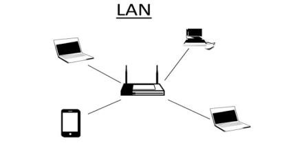

1ª Classificação por modelo computacional:
-
Ponto a Ponto:
O usuário tem recursos de cliente e servidor simultaneamente (ex.: as redes domésticas)
-
Cliente e Servidor:
Servidor e clientes são distintos, sendo que os clientes utilizam os recursos dos servidores. (P.e.: Acessar uma página na web)
2ª Classificação por abrangência:
-
PAN:
A rede PAN (Personal Area Network), que significa rede de área pessoal, é a com maior limitação de alcance. Ela conecta apenas aparelhos que estão a uma distância curtíssima, um exemplo desse tipo de rede é o Bluetooth.
-
LAN:
Esse é o formato com o qual estamos mais habituados. A LAN (Local Area Networks) é uma rede local, ou seja, de curta distância. Ela conecta dispositivos próximos, reunidos em um mesmo ambiente, por exemplo, o escritório de uma PME ou uma residência. (ps. Por isso a gente chama de LAN-house).
 -
CAN:
A CAN (Campus Area Network) – ou seja, uma rede de campus – possui um propósito bastante parecido com a LAN. Contudo, ela já possui um alcance maior. Sua utilidade é permitir a conexão entre redes de um mesmo complexo ou condomínio, como universidades, hospitais e centros comerciais.

-
MAN:
Para conectar as redes locais dentro de distâncias maiores, você pode utilizar a MAN (Metropolitan Area Network), que significa rede metropolitana. Ela pode ser utilizada para estabelecer uma conexão entre escritório que estão em um mesmo município ou cidades vizinhas, cobrindo algumas dezenas de quilômetros.
-
WAN:
A WAN (Wide Area Network) é uma rede de longa distância. Sua cobertura é bastante superior à das redes LAN e MAN. Com ela é possível conectar equipamentos em diferentes localidades, de países até continentes. (P.e.: a Internet).
3ª Classificação por topologia física e lógica.
1:Fisica
Trata da disposição física dos computadores, literalmente onde eles estão um em relação ao outro.
-
Estrela:
-
Anel:
-
Barramento:
2:Lógica
Trata da forma como os dados serão passados entre os computadores. Ou: refere-se à maneira como os sinais agem sobre os meios de rede, ou a maneira como os dados são transmitidos através da rede a partir de um dispositivo para o outro sem ter em conta a interligação física dos dispositivos.
 Voltar
Voltar